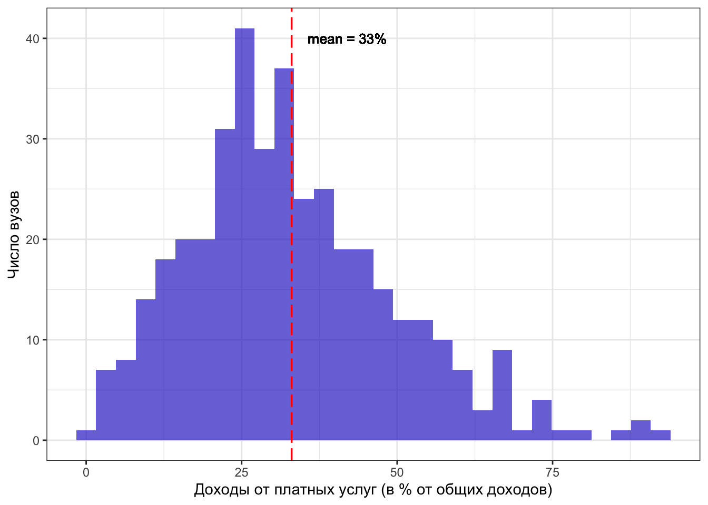

1 Данные
На официальном сайте для размещения информации о государственных (муниципальных) учреждениях bus.gov.ru публикуются отчеты о финансовых результатах деятельности вузов. В них содержаться данные о доходах и расходах вузов. Мы скачали отчеты за 2018 год по 391 государственному вузу. Мы выбрали для анализа 2018 год, так как за этот год были доступны наиболее полные данные. Вообще по данным мониторинга эффективности в 2018 году насчитывалось 502 государственных вуза . Помимо очевидной проблемы, что не все государственные вузы публикуют эти отчеты, существует проблема качества их заполнения – то есть, отчет загружен на сайт, но в нем представлены очевидно нереалистичные суммы, например, Дагестанский вуз в 2018 году потратил 0 рублей на оплату труда, а такой-то вуз потратил бла-бла-бла (посмотри пару отфильтрованных id). Такие вузы с нереалистичными отчетами мы тоже исключили из нашей выборки. Таким образом из 502 государственных вузов, которые работали в России в 2018 году у нас есть финансовые отчеты 391 вуза. Мы не обнаружили какого-либо смещения по регионам или семействам для вузов, которые не опубликовали отчет или опубликовали отчет с очевидными ошибками. То есть, мы предполагаем, вузы не попали в нашу выборку случайным образом, как минимум, по региональному признаку и принадлежности к семейству (см. Таблица 1).
1.0.0.0.1 Таблица 1. Сопоставление выборки и генеральной совокупности по семействам, 2018 год
Немного подробнее о самих отчетах: они имеют матричную структуру (образец в упрощенной форме представлен в Приложении 2). В отчете мы можем видеть не только общую сумму доходов по различным статьям, но и источник финансирования этих доходов. То есть, мы можем видеть, что вуз оказал услуг на 100 рублей, при этом, 60 рублей получил из бюджета, а 40 рублей – внебюджетные источники (фирмы и население). То же самое и с расходами – мы видим, что вуз заплатил сотрудникам 100 рублей, и мы точно знаем, какая часть из этих 100 рублей это бюджетные деньги, а какая внебюджетные.
Основным ограничением является то, что доходы и расходы разбиты на сильно укрупненные группы, поэтому мы не можем узнать о содержании строки “Доходы от оказания платных услуг”. Внутри находится не только образовательная деятельность вуза, но и научная. Таким образом, мы будем знать, откуда пополнялась эта строка – из бюджета или от фирм/населения, но не будем знать что там доходы от образовательных программ, а что доходы от научных исследований.
Теперь подробнее о нашей выборке в 391 вуз (ТАМ ТОЧНО 391!??? СДЕЛАЙ НОРМАЛЬНЫЙ КОД, КОДА БУДЕШЬ РЕНДЕРИТЬ САЙТ). Распределение доходов среднего вуза представлено схематично в Таблице 2 – внебюджетные доходы составляют 37% от всех доходов вуза. Причем основная часть внебюджетных доходов – это доходы от оказания платных услуг (90%), то есть деньги студентов и фирм на образование и исследования. Остаются еще 10%, куда входят доходы от собственности, возмещение ущерба, операции с активами и прочее.
1.0.0.0.2 Таблица 2. Распределение доходов среднего вуза в нашей выборке

В нашей выборке есть вузы, которые сильно отклоняются от значений среднего вуза (см. Таблицу 3). Есть вуз, у которого зафиксирована минимальная доля доходов от приносящей доход деятельности – 2,1%, это значит, что все остальные доходы он получает от бюджетов всех уровней. Из той же таблицы мы видим, что есть вуз, для которого 99,1 % доходов – это внебюджетные средства, а значит только 0,9 % этот вуз получает из бюджета. При этом такие выбросы, по всей видимости, не вносят сильного шума, так как среднее и медиана почти совпадают. Если смотреть на квартили, то мы видим, что для четверти вузов в нашей выборке доля внебюджетных доходов составляет более 47,3%.
1.0.0.0.3 Таблица 3. Описательные статистики доходов вузов
| nobs | NAs | Minimum | Maximum | X1..Quartile | X3..Quartile | Mean | Median | |
|---|---|---|---|---|---|---|---|---|
| Доходы.от.бюджетов.всех.уровней | 391 | 0 | 0.87 | 98 | 53 | 75 | 63 | 65 |
| Доходы.от.приносящ..доход.деятельн. | 391 | 0 | 2.13 | 99 | 25 | 47 | 37 | 35 |
| Расходы.за.счет.бюджетов.всех.уровней | 391 | 0 | 0.92 | 100 | 54 | 77 | 65 | 66 |
| Расходы.за.счет.приносящ..доход.деятельн. | 391 | 0 | 0.00 | 99 | 23 | 46 | 35 | 34 |
Сразу ограничим область наших интересов: нас интересовать не просто внебюджетные доходы вузов, а только доходы от образовательных и исследовательских услуг студентам и фирмам. То есть мы будем смотреть на блок 90% из Таблицы 2 и при этом игнорировать 10% блок c доходами от собственности, от операций с активами и прочим.
Доля доходов, которые получает вуз за счет оказания платных услуг населению и организациям, в среднем составляет 33% от всех доходов вузов. В первую очередь это доходы от коммерческих студентов, выполнение научных исследований для сторонних организаций, программы дополнительного образования, повышения квалификации и прочее. Таким образом, треть доходов зависит от доходов населения и фирм, а значит, потенциально могут оказаться под угрозой при изменении рыночной среды.
Следует отметить, что есть целая группа вузов, у которых доля таких доходов заметно выше среднего (все, кто сильно правее красной пунктирной линии на Рис. 5). У 43% вузов (170 из 392) доля собственных доходов выше среднего значения. Рассмотрим далее подробнее группу вузов, для которых доля внебюджетных доходов составляет основной источник дохода.
1.0.0.0.4 Рис. 5. Гистограммы распределения доходов вузов, завязанных на доходах населения и фирм
